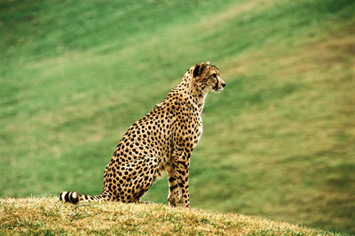
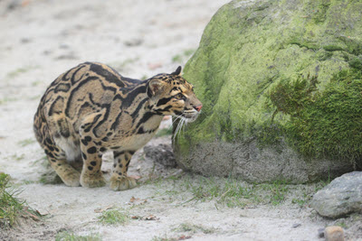
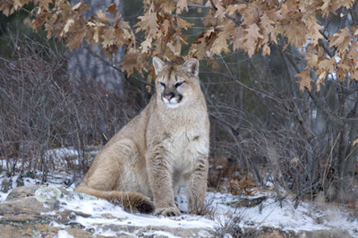
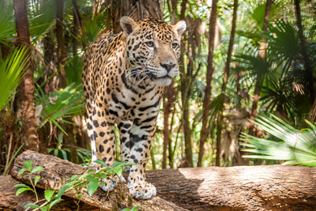
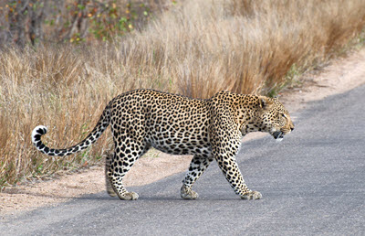
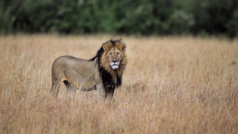
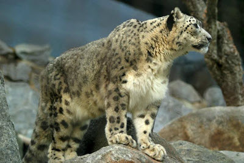
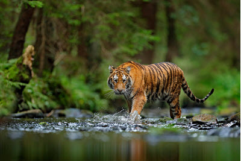

Cheetah: Found in Africa and Asia. Related to the cougar and jaguarundi.

Clouded Leopard: Inhabits the Himalayan mountains, Southeastern parts of Asia and South China.

Cougar: Found in North, Central and South America.

Jaguar: A South and Central America wild cat. Sometimes seen in North America.

Leopard: Can be found in Africa, Asia, parts of Russia and India.

Lion: This big cat inhabits Africa and Asia.

Snow Leopard: You will find snow leopards in Central and South Asia.

Tiger: Can be found in Siberia, Indochina, Sumatra and India.